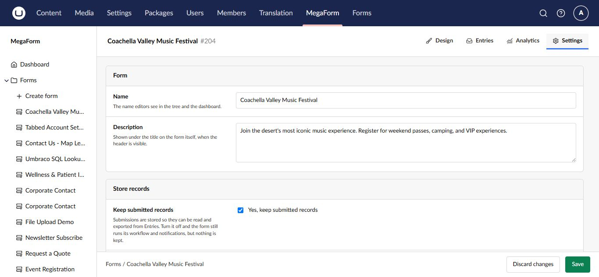

Use the form builder on Umbraco
The form builder is the main editing workspace. It combines a field palette, visual canvas, form tools, settings, entries, and analytics in one Umbraco workspace.

Workspace tabs
| Tab | Purpose |
|---|---|
| Design | Build pages, sections, layouts, fields, and widgets |
| Entries | Review submissions for this form |
| Analytics | View form activity and performance |
| Settings | Change the form name, description, and storage behavior |
Add fields and layout
The left palette groups items into Basic, Layout, and Widgets. Drag an item onto the canvas or select an insertion point. Use layout items to group related questions, arrange columns, and divide a long form into pages.
The canvas includes controls to add a page at the beginning or end and to reorder pages. Keep one subject per section and use short, direct labels.
Configure a field
Select a field on the canvas to open Field Properties.

The property panel groups the available settings:
- General for label, key, placeholder, help text, and required state.
- Options for radio, checkbox, and select choices.
- Conditional Logic for showing or enabling the field based on another answer.
- Security for field-level access and sensitive data behavior.
Use a stable, meaningful field key before the form receives production submissions. Changing keys later can make old and new entry data harder to compare.
Form settings
Open the Settings workspace tab to update form-level details and choose whether MegaForm stores submitted records.

Turn off Store records only when the form's workflow delivers data elsewhere and your retention policy does not require a local entry. Test that external destination before publishing.
Save, preview, and publish
- Save draft keeps the current changes without making them the public version.
- Preview shows how the current form behaves before publication.
- Publish and View Form publishes the form and opens the public result.
Always test required fields, validation messages, conditional fields, multiple pages, and the success result as a visitor.